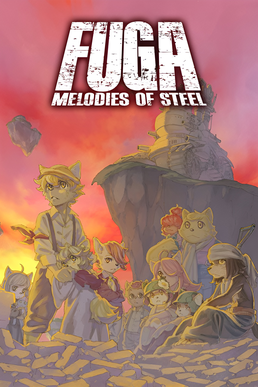

Este es el juego más reciente de la lista lo encontre un dia buscando juegos rpg que han salido y de casualidad me salio una noticia diciendo que este llorarias con este juego. En este juego se sigue a Malt siendo el mayor del grupo con 12 años, mientras se encargaba de cuidar a las ovejas se da cuenta que la guerra a llegado a su pacifica aldea, escapa junto a su hermana mei y sus amigos a una cueva en la montaña al llegar se encuentran con el taranis un tanque gigante el cual parece solo funcionar con los niños los cuales llenos de determinacion se suben al tanque para ir a rescatar a todos sus seres queridos. Recuerdo en una parte llegando al final del juego uno de los personajes se fue del grupo britz un niño soldado del ejercito rival el cual parecia que el grupo no confiaba mucho en el expecto malt quien entendio su situacion de que su familia estaba presa britz se fue por 2 capitulos y en el penultimo capitulo pues el fue el jefe en su combate si tu tenias poca vida britz dejaba de atacar y te curaba demostrando el aprecio que tenia al grupo por ser sus amigos este combate puede terminar de 2 formas si tu tampoco confiaste en el y no hablaste para formar una amistad britz no te escuchara al ganar el combate y termina muriendo explotando junto con su tanque para dañar al taranis e intentar que al cumplir estas ordenes su familia sea liberada pero si en contrario te hiciste su amigo el escuchara a malt y no explotara ya que escucha que su familia ya fue rescatada por el grupo y volviendose a unir gracias a esto se puede sacar el final verdadero.
